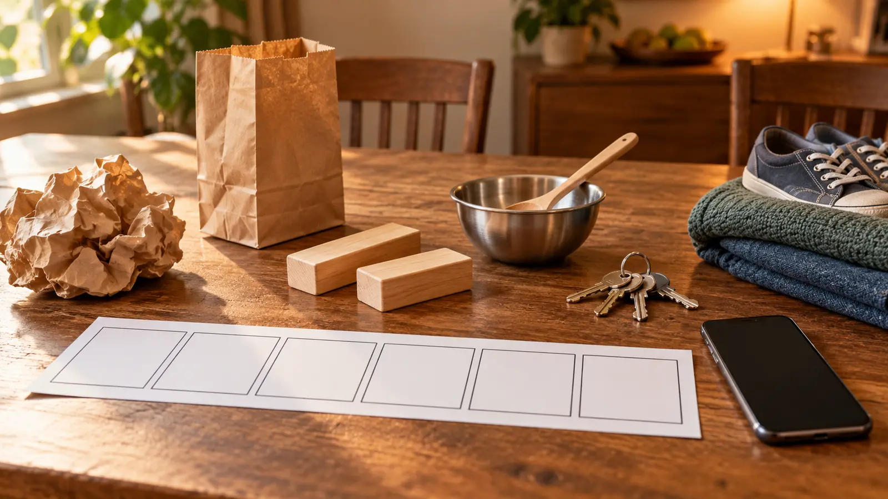

Paper crinkle
Try leaves, a map or a character handling a note. Change speed before changing material.
AT HOME · 30 MINUTES · NO-SPEND · AGES 7+
You do not need a microphone, an editing subscription or a public audience. Pick six safe objects, perform to a silent 20-second scene, keep the better take, then delete or save it privately.

Do not use glass, knives, flames, exploding bags, heavy dropping objects or food that creates an allergy issue. Keep keys and small items away from younger siblings and pets. Set the volume for the room, not for maximum drama.
The Museum of the Moving Image describes Foley as creating sound effects for film and television, and its education program lets visitors add sound effects and music to scenes. The useful principle is performance synchronized to action. This lab strips the idea down to timing and household materials; it does not claim that six kitchen-table sounds reproduce professional recording, editing, acoustics or rights clearance.
Give children three editing words: early, late and covered. Those are more actionable than “bad.” A cue can be accurate but too loud; a good sound can cover dialogue; a quiet cue can arrive too late to explain the action. Fix one variable per take.
Keep the scene family-made and private. Do not download a copyrighted movie clip, screen-record a streaming service, include school names, addresses or other people’s faces, or post a child’s recording for the sake of completing the activity. A local blank-wall scene is enough. If the device automatically uploads recordings, an adult should review its settings before starting.
For another private observation activity, use the no-posting photo scavenger hunt. For outdoor listening rather than sound creation, use the neighborhood sound map. For a different timing experiment, try the flashlight shadow lab.
Low energy: use three cues and one take; talk about which sound matched best. No device: one child performs a paper storyboard while the other performs sounds live. Noise-sensitive home: use fabric, paper and fingertip taps, then listen from closer instead of playing louder. Younger sibling present: remove keys and small objects; use only large soft materials. Everyone wants a turn: rotate caller, performer and scene operator after each take.
Skip when the room cannot tolerate repeated sound, the available objects cannot be supervised safely, the device settings are unclear, or the children are more interested in posting than making. Use the live no-device version or the 45-minute library night instead.
MAKE THE WEEK COUNT
Build the plan your family can finish well, then leave enough energy for the next part of the day.
More family plans